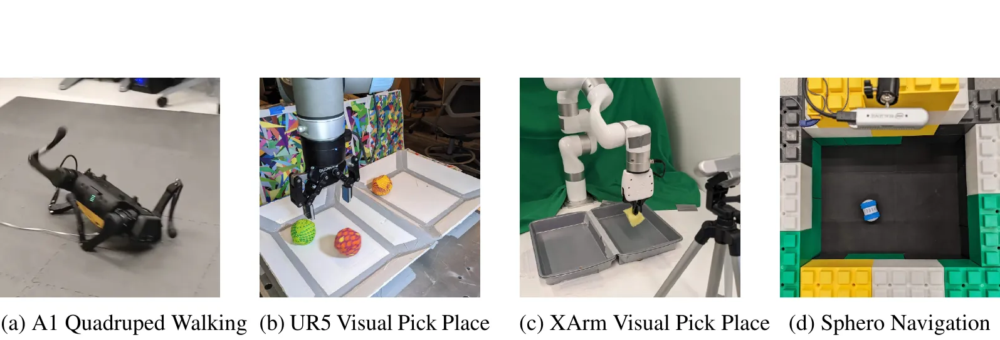
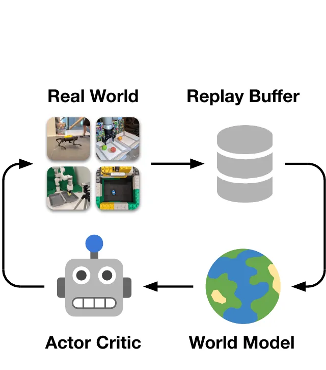
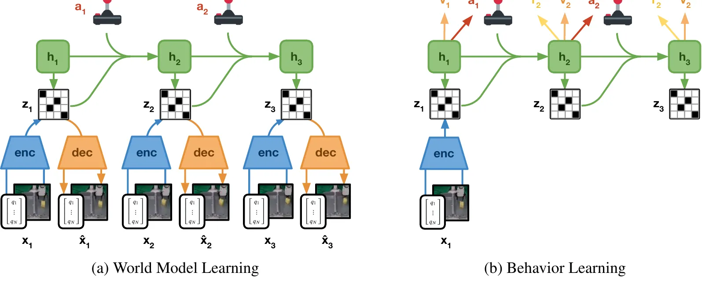
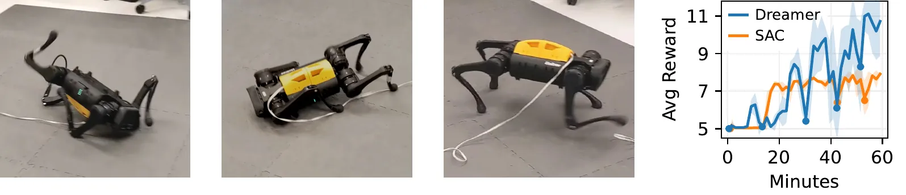
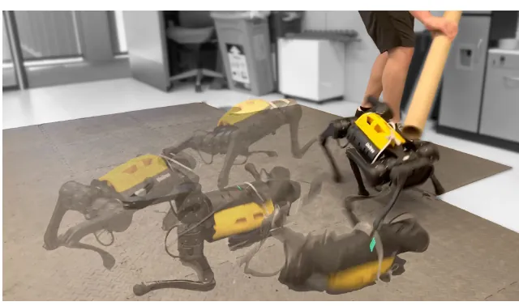
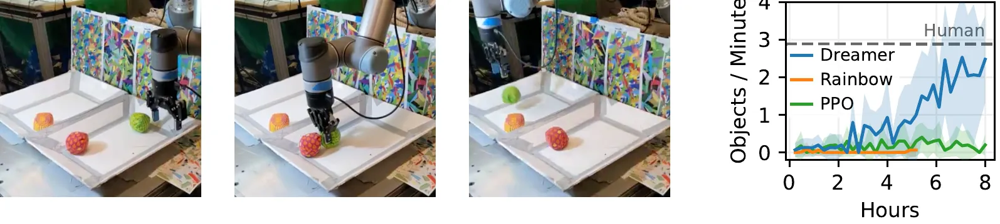
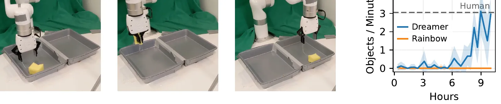
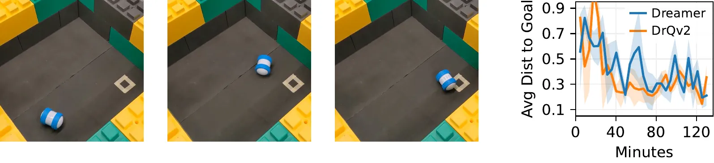
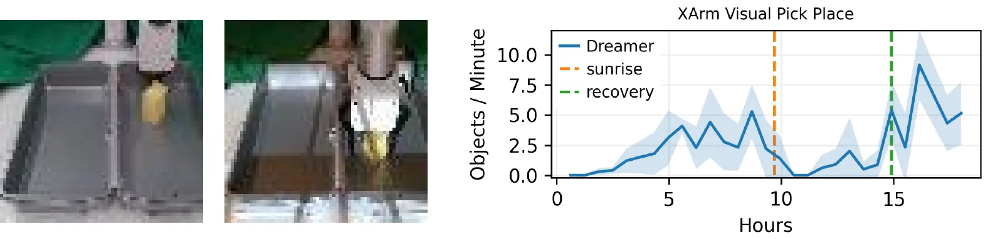
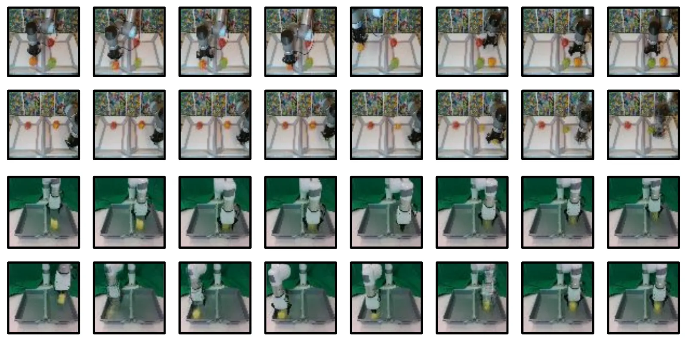

arXiv 2206.14176 · cs.RO · v1 2022 年 6 月 28 日 · CoRL 2022（PMLR 205）· 中文精读
DayDreamer: World Models for Physical Robot Learning
作者 Philipp Wu、Alejandro Escontrela、Danijar Hafner（三人同等贡献）、Ken Goldberg、Pieter Abbeel，加州大学伯克利分校。
关于这份精读。这篇在 arXiv 上以 CC BY 4.0 发布，所以下面放了从 PDF 裁切的原图，版权归 Wu 等作者。图只做了裁切和格式转换，没有改内容。正文是我用自己的话按原文顺序写的，不是逐字翻译，覆盖第 1 到 5 节和附录 A 到 D。
公式按原文编号，数字照录原文。标成“读者注”的框是我核算或对照的结果，不属于论文内容，页尾有汇总。标着“重画”的图只用了官方仓库分数文件里的数值。
官方代码我读了，没有运行：danijar/daydreamer 提交 709016c（2022-09-13，只有这一个提交，TensorFlow 2）。仓库的 scores/ 目录有每次运行的分数，这让很多图上的数字可以直接核对。论文和代码不同的地方都列了出来。
深度强化学习需要大量试错，所以机器人学习大多依赖仿真器，而仿真器不准，学到的行为也不会随世界变化而调整。这篇问的是：Dreamer 这类在学到的世界模型里规划的算法，能不能让真实机器人直接在线学习？作者把 Dreamer 用到四台机器人上，不用仿真器，也没有提出新算法。
读完我认为最值得记住的三点。第一，这篇的贡献是实验和基础设施，算法基本就是 DreamerV2，主要改动是把收集和学习并行。第二，奖励设计和实际运行参数在代码里和论文的说法有不少出入：式 (5) 的第一项符号写反了（读者注 6），γ 在附录写 0.95、代码是 0.995（读者注 12）。第三，“每分钟多少个”和“小时”这两个轴要小心读：图 5 到 7 的横轴换算出的控制频率和正文不一致（读者注 8），图 A.1 的 9 个/分钟按真实时钟只有约 2 个（读者注 11）。
SuperMimic 的相关工作提到本文只有一句：DayDreamer 展示了直接在物理机器人上做世界模型学习。这句话放在讲基于模型的策略优化和机器人部署的那一段，后面没有再引用。它没有说从本文继承了什么，我逐项比对后也没有找到直接采用的部件，下面的对照是我做的，不是 SuperMimic 的自述。
两篇的问题相反：本文的学习发生在真机上，SuperMimic 的学习发生在仿真器里，真机只用于部署。共同点只有“用世界模型减少真实或仿真交互”这个大方向。算法骨架的继承关系要看 Dreamer 页的对照。
| 项目 | DayDreamer | SuperMimic |
|---|---|---|
| 在哪里学 | 真机在线，不用仿真器 | 仿真器，训完部署到 Unitree G1（SuperMimic §4.4） |
| 数据量 | 1 台机器人，一次运行 1 万到 9 万步 | 每 GPU 4096 个环境 |
| 世界模型 | RSSM，隐状态，离散码 32 × 32，要重建输入 | 确定性 MLP，显式仿真状态，以仿真上下文 ξ 为条件，不重建图像 |
| 想象长度 | H = 15，γ = 0.995（代码） | H = 32，γ = 0.99 |
| 随机来源 | 未知，用隐变量表达 | 已知，物理参数写进 ξ |
| 部署时带什么 | 编码器、RSSM、策略都要带；并且一直在学 | 只带策略 |
| 被推的时候 | 在线继续学，10 分钟内适应（第 3.1 节） | 训练时不做根速度扰动，理由是确定性模型表达不了这种状态跳变；物理参数随机化已足够迁移（SuperMimic 附录） |

教机器人在真实世界解决复杂任务是机器人学的基础问题。深度强化学习（RL）让机器人靠试错改进，但目前的算法需要的交互太多，在许多真实任务上不实际。现代世界模型（world model，一个从经验学到的、能预测行动后果的模型）在仿真领域和电子游戏里显示了很高的数据效率，因为机器人可以想象动作的结果，减少真实试错。
作者列举世界模型对机器人的几个好处：预测未来让少量真实交互就能规划和学行为；学到的动力学知识可以复用到下游任务；表示可以融合多种传感器模态，省去手工状态估计；对离线数据泛化好。难点是真实世界的世界模型本身很难学准。
本文选了最直接的问题设定：真实世界里的在线强化学习，不用仿真器、不用示教。贡献列了四条：

整体流程和 Dreamer 相同：从回放学世界模型，从模型预测的轨迹学行为，部署行为继续扩充回放。为了满足延迟要求，也为了不等环境就能快速训练，作者把学习和收集解耦：learner 线程持续训练世界模型和演员-评论家，actor 线程并行地算动作。
论文说线程。官方 README 写“两个进程”，要开两个终端分别跑 --run learning 和 --run acting。actor 写回放走 ZeroMQ（embodied/replay/store.py 的 StoreServer 和 StoreClient）；权重走 checkpoint 文件，acting.py 按 sync_every 周期重新加载，四个机器人的配置都是 20 秒。论文没写同步周期。所以 actor 用的策略最多比 learner 旧 20 秒左右，这是读代码得到的，我没跑。
另一个容易看错的地方：README 里 A1 的 learner 命令写 --task a1_sim，看起来像在用仿真。读 train.py，learning 分支建好环境后立刻 env.close()，环境只用来提供观测和动作空间的形状，训练数据全部来自 actor 写进回放的真机数据。这和论文“不用仿真器”一致。
世界模型学习。世界模型是一个预测环境动力学的深度网络。传感器输入可能是大图像，所以它预测未来的表示，不预测未来的输入。这能减少误差累积，也让大批量并行训练成为可能。可以把它看成机器人自己学的一个快速仿真器。结构基于循环状态空间模型（RSSM），四个部件：

机器人常有多种传感器：关节读数、力传感器、RGB 和深度图像。编码器把所有输入 \(x_t\) 融合成随机表示 \(z_t\)，动态模型用循环状态 \(h_t\) 预测 \(z_t\) 序列。解码器不参与从隐轨迹学行为。这些实验里机器人要靠交互发现任务奖励，由奖励网络学习预测；也可以手工指定解码后输入的奖励函数。世界模型的所有部件用随机反向传播一起优化。这里 \(s_t\) 指 \((h_t,z_t)\)。
演员-评论家学习。世界模型表达和任务无关的动力学知识，演员-评论家学针对当前任务的行为。行为从隐空间预测的轨迹里学，不解码观测。这让单 GPU 上的典型批量达到 16K，和 Isaac Gym 这类专用现代仿真器相近。
演员学习在每个隐状态上选动作，最大化未来预测奖励之和。评论家用时序差分学习预测这个和，这样能考虑 \(H=16\) 步规划窗口之外的奖励。回归目标如果选“N 步奖励加评论家预测”，N 的取值是任意的，所以用 λ 回报，即对所有 \(N\in[1,H-1]\) 做加权平均：
第 2 节写 \(H=16\)，附录 D 写 15，代码 imag_horizon: 15。这不矛盾：代码的 imagine 把起点拼在前面，走 15 步后共有 16 个状态。“16K”也由此对上：每次更新有 B × T = 32 × 32 = 1024 个起点（Agent.train 把批次和时间维摊平），1024 × 16 = 16384。论文自己没写这个算式，是我算的。这个数是状态个数，不是一次传给网络的独立样本数。动画第 6 幕可以改 H 看总数。
agent.py 的 VFunction.target 用 impl='gve'：interm = r + disc * v[1:] * (1-λ)，再倒着 vals = interm + disc * λ * vals。展开就是式 (3)，只是 γ 换成“γ × 预测的继续概率”。值 \(v\) 用目标网络，和论文说的慢更新副本一致。λ = 0.95、H = 15 时最长一项的权重是 \(0.95^{14}=0.488\)，这个算术和 Dreamer 页读者注 4 相同。
评论家回归 λ 回报，演员最大化它。策略梯度有几种估计：Reinforce（用对数概率乘回报，不需要环境可微）和重参数化（把回报的梯度直接穿过可微的动态网络）。按 Hafner 等 (2020)，连续控制用重参数化，离散动作用 Reinforce。此外鼓励高熵，防止策略塌缩成确定性并保持探索：
sg 表示停止梯度。演员和评论家用 Adam 优化。算 λ 回报时用评论家的慢更新副本。演员和评论家的梯度不影响世界模型，否则模型预测会变得错误且过于乐观。和 Hafner 等 (2020) 相比，这里没有训练频率超参数，因为解耦的 learner 和收集并行，不限速。
式 (4) 是 Reinforce 的形式，但 A1 和 Sphero 是连续动作，走的是重参数化。代码 ImagActorCritic.loss 两支都有：backprop 时 loss = -score，reinforce 时 loss = -log_prob * stop_gradient(score)。动画第 8 幕在一维玩具上比较两者，同样的问题下 Reinforce 单样本标准差约是重参数化的 2 倍多。
代码还有三点式 (4) 没写。第一，η 不是常数，附录 D 也没列：actent 是自动调整的系数，初值 \(3\times10^{-3}\)，把归一化熵调到目标（A1 0.5，其余 0.4）。第二，score 进入损失前过了 advnorm 均值-标准差归一化。第三，每项乘了累积折扣权重 traj['weight']。
3D 框架动画 · 11 幕 · 可拖动、可调参数
第 2 幕切换耦合和解耦，第 3 幕看回放的真实占用，第 4 幕换机器人看融合，第 5 幕当场算 KL 平衡，第 7 幕看 γ 的钟表含义，第 8 幕比较两种梯度估计，第 9 幕可以切换式 (5) 的符号，第 10、11 幕是真实结果。玩具和示意部分都有标注。
四台机器人各一个任务，和相应的算法基线及人类基线比较。任务代表运动、操作、导航，挑战覆盖连续和离散动作、稠密和稀疏奖励、本体感觉和图像观测、传感器融合。要回答三个问题：Dreamer 能否不用仿真器直接在真实世界学习？能否在不同平台、感知模态、动作空间上都成功？数据效率和之前的 RL 算法比如何？
实现。基于 DreamerV2 的官方实现，它能处理多模态。作者开发了异步的 actor 和 learner，这对四足这样高控制频率的环境是必需的，对机械臂这样慢的环境也能加速学习。所有实验用相同的超参数。
基线。每个实验选一个强基线。A1 是连续动作和低维输入，比 SAC。XArm 和 UR5 是图像加本体感觉、离散动作，比 DQN 系列的 Rainbow；本体感觉做成广播平面（把每个数铺满一层）和 RGB 通道拼接。UR5 另比 PPO，“用类似改动融合图像和本体感觉”。人类基线用操作接口遥控机械臂，给出近似上限。Sphero 是图像和连续动作，比 DrQv2。
Rainbow。rainbow/env_crafter.py 的 _augment_obs 把图缩到 84 × 84，拼 cartesian、joint、gripper_pos、gripper_side 的平面。深度那两行被注释掉了，所以按公开代码，XArm 上的 Rainbow 没有深度，而 Dreamer 有。论文写基线输入是“图像和本体感觉”，这和代码一致，只是没有点明这个差别。
PPO。ppo.py 不是从原始图像学：它用预训练的 R3M ResNet-50 把图像变成 2048 维向量，再和本体感觉一起进 stable-baselines3。论文没提 R3M。这个文件里环境写的是 xarm_real，ur5_real 那行被注释，而论文只报告了 UR5 的 PPO，所以我不能确定公开文件就是当时的 UR5 版本。

任务是翻身、站起、以固定目标速度前进。此前的四足工作要么要在仿真里大量域随机化训练，要么用恢复控制器避开不安全状态，要么把动作空间限定成参数化轨迹生成器。这里是端到端学习，直接在机器人上，不用仿真器也不复位。Unitree A1 有 12 个直驱电机，20 Hz 控制，连续动作表示电机角度，由硬件上的 PD 控制器实现。输入是电机角、朝向和角速度。为保护电机，用巴特沃斯滤波器滤掉高频指令。场地有限，到边界时人工干预，但不改变关节构型和朝向。

奖励是五项之和。直立项由基座坐标系的上向量算，站姿三项由髋、肩、膝的关节角算，速度项由前向速度和总速度算。每一项只有在前一项达到至少 0.7 时才生效，否则置 0：
第一项的符号。式 (5) 写 \((\hat z^T[0,0,1]-1)/2\)，取值在 [−1, 0]，永远到不了门槛 0.7，后四项就永远不开。按这个式子最高奖励也只有 13，而图注说 14。代码 rma_task.py 是 np.dot([0,0,1], up) / 2 + 0.5，即 \((\hat z^T[0,0,1]+1)/2\)，取值 [0, 1]，最高 1 + 1 + 1 + 1 + 10 = 14。所以式 (5) 的减号应当是加号。动画第 9 幕可以切换。
门控的位置。文字说门没开时“置 0”。代码是 r_vel = (r_kne > 0.7) * ...，然后 10 * (r_vel + 1) / 2。门关时速度项等于 5，不是 0。分数文件也证实：仰面时每步约 5.06。
髋的目标。式 (5) 髋和肩都写 \(+0.2\)，目标是 −0.2。代码 STANDING_POSE = [0, -0.2, 1.0]，髋的目标是 0。另外代码的三项用归一化后的偏差再除以最坏偏差，所以每项都在 [0, 1]，这和式 (5) 的写法也不一样。
滤波器论文没给参数，代码默认是二阶低通，ACTION_FILTER_HIGH_CUT = 1.5（action_filter.py）。
一小时后，Dreamer 能稳定地翻身、站起、前进。前 5 分钟学会翻过来落到脚上，20 分钟后学会站，约 1 小时学会一种弹跳步态（pronking，四脚几乎同时离地），以目标速度前进。之后用长杆反复把它推倒，额外在线学习 10 分钟内，它学会抗推或快速翻回来。SAC 很快学会翻身，但在这么小的数据预算下站不起来也走不了。
从代码的奖励能读出曲线的刻度含义（这是我的解读）：5 是仰面的底，9 是不前进时的上限（直立 + 三项站姿最多 4，加速度项的底 5）。超过 9 必然在前进。
| 读数（矢量路径，Dreamer） | 时间 | 值 |
|---|---|---|
| 第一次明显离开 5 | 9.1 分 | 6.19 |
| 文中“再过 20 分钟站起”附近 | 24.2–27.3 分 | 7.91–8.43 |
| 第一次超过 9 | 33.3 分 | 9.41 |
| 最高一格 | 54.6 分 | 11.12 |
| 最后一格 | 59.1 分 | 10.72 |
SAC 最高一格 7.91，从未到 9，和“没有学会走”一致。a1_dreamer.json 的 445 个点按 20 Hz 换算，除第一个点 5.76 外，在约第 7.7 分钟之前都在 5.05 到 5.35 之间，第 7.9 分钟才跳到 6.41。代码的 train_fill 是 5000 步，即前 4.2 分钟是随机策略。所以日志里第一次翻到脚上的证据比文中的“前 5 分钟”晚约 3 分钟。短暂的翻身未必抬高每 12.5 秒的平均分，我不能排除这一点。
图上的实心圆点在矢量路径里能读出：Dreamer 在 0.5、13.4、30.3、42.3、51.5 分钟，SAC 在 1.0、42.5、53.1 分钟。单次运行：分数文件的 seed 都是 0，只有一条。a1_dreamer.json 记到 93604 步（78 分钟），图只画到 60 分钟。

仓储和物流里常见的任务。难点是奖励稀疏、要从像素推断物体位置、多个物体的动力学。输入是本体感觉（关节角、夹爪位置、末端笛卡尔位置）和第三人称 RGB。抓到（由夹爪未完全闭合判断）+1，在同一箱放下 −1，放到对面箱 +10。UR5 以 2 Hz 控制。动作是离散的：沿 X、Y、Z 增量移动末端和切换夹爪；Z 移动只在拿着物体时可用，到正确箱子上方夹爪自动打开。人类基线记录了 3 位操作者各 20 分钟的手柄遥控。
Dreamer 8 小时内达到平均每分钟 2.5 个。起初奖励太稀疏，学得慢，2 小时后逐渐变好：先学会定位物体、靠近时切换夹爪，后来抓得准，还学会把物体从角落推出来。Rainbow 和 PPO 只学到短视行为：抓起来立刻放回原箱。作者推测它们需要更多经验，而真实世界收集不到。
分数文件是 (步数, 每回合分数)，图的横轴是时间。我在一组“每小时步数”上把分数按图上的格子分箱，再和矢量路径读出的曲线做最小二乘，取残差最小的比例。这是拟合，分箱方式是我猜的，所以只看量级：
| 任务 | 文中频率 | 文中频率对应步/小时 | 拟合的步/小时 | 相当于 |
|---|---|---|---|---|
| A1 Dreamer / SAC | 20 Hz | 72000 | 70800 / 70700 | 19.7 Hz |
| UR5 Dreamer / PPO | 2 Hz | 7200 | 4004 / 4006 | 1.11 Hz |
| XArm Dreamer | 约 0.5 Hz | 1800 | 2940 | 0.82 Hz |
| Sphero Dreamer | 2 Hz | 7200 | 4500 | 1.25 Hz |
A1 对得上，其余三个对不上。UR5 按 2 Hz 算，曲线和分数的均方根误差是 0.90 个/分钟，按 4000 步/小时是 0.15；XArm 按 1800 是 0.99，按 2940 是 0.08；Sphero 按 120 步/分钟是 0.15，按 75 是 0.07。最直接的证据是 UR5：ur5_dreamer.json 总共 39144 步，如果真是 2 Hz，只有 5.4 小时，撑不满图上的 8 小时。
纵轴也能反推：UR5 和 XArm 的“个/分钟”约等于每回合分数 × 0.055，也就是每个物体 11 分、每分钟 0.6 回合，一回合 100 步对应 100 秒，约 1 Hz。这和横轴一致，和文中的 2 Hz 不一致。可能的原因是文中写的是指令频率，而手臂动作阻塞了循环（代码里 control_rate_hz 默认 20，真正的节拍由 set_position 决定），这只是我的猜测。
文中的 2.5 个/分钟核对得上：矢量路径最后一格（8.0 小时）是 2.48，最高一格 2.53。人类虚线读出来是 2.89，所以 Dreamer 是人类的 86%。PPO 最后一格 0.20，Rainbow 记到 5.18 小时、最后一格 0.067。

XArm 是便宜的 7 自由度机械臂，约 0.5 Hz 控制。任务是定位并抓起一个软物体，在两个箱子之间来回移动。箱子不倾斜，所以用绳把物体连到夹爪上，这样不容易卡在角落，代价是动力学更复杂。稀疏奖励、离散动作和观测都和 UR5 相同，只多了深度图。
10 小时内 Dreamer 达到平均每分钟 3.1 个，和人类相当；Rainbow 没学会。作者观察到它有时用绳子把物体从角落拉出来再抓。光照大变时（如日出的强烈阴影），表现先崩溃，再适应，几小时后超过原来，详见附录 A。
矢量路径读数：最高一格 3.12（8.97 小时），末两格 1.51 和 2.96（10.0 小时），人类虚线 3.06。所以“3.1”是峰值，曲线还在大幅波动。第一次超过 1 个/分钟是 8.28 小时，此前都低于 1，整段上升集中在最后不到 2 小时。Rainbow 全程最高 0.06，末格约 0。
另外，scores/xarm_long.csv 有一次论文没有报告的 28.4 小时运行，带墙钟时间。按物体数除以真实分钟算，5 到 10 小时是 1.10 个/分钟，25 到 28.4 小时是 2.26 个/分钟。这次运行和图 6 不是同一次，不能直接比，但它提示：图 6 的换算（每分钟 60 步）比那次运行的中位频率（0.59 Hz，每分钟 36 步）乐观。

Sphero Ollie 是圆柱形小车，两个电机，2 Hz 连续力矩控制。机器人对称，只有图像，所以朝向只能从历史推断。奖励是负的 L2 距离。目标固定，每 100 步结束回合，用一串高功率随机动作随机化位置。
2 小时内 Dreamer 学会快速稳定地到达目标并留在附近，平均距离 0.15（单位是场地大小，按时间步平均）。专为图像连续控制设计的 DrQv2 表现相近，这和 Yarats 等 (2021) 在仿真里的结论一致。
图 7 矢量路径上，Dreamer 全程最低一格 0.194（125.5 分钟），最后一格 0.211，横轴画到 130 分钟。DrQv2 最低 0.145，最后 0.355。分数文件里 Dreamer 第 9000 步之后 9 个回合的平均距离是 0.272，单回合最好是 0.05。DrQv2 同样步数段是 0.256。我确认过蓝线对应 Dreamer：图例如此，并且用 sphero_dreamer.json 拟合蓝线的误差（0.07）小于拟合橙线（0.18）。
所以“0.15”可能是用其他方式算的，比如某个窗口或评测，论文没说明。按我读到的数据，两条曲线末段噪声都很大，“相近”成立，0.15 我无法复现。
| 实验 | 文中结果 | Dreamer 末格 | 基线末格 | 人类虚线 |
|---|---|---|---|---|
| A1（平均奖励，最高 14） | 1 小时走起来 | 10.72 | SAC 7.91 | – |
| UR5（个/分钟） | 8 小时 2.5 | 2.48 | PPO 0.20，Rainbow 0.067 | 2.89 |
| XArm（个/分钟） | 10 小时 3.1 | 2.96（最高 3.12） | Rainbow 0.00 | 3.06 |
| Sphero（距离，低更好） | 2 小时 0.15 | 0.21（最低 0.19） | DrQv2 0.35（最低 0.14） | – |
“文中结果”照录原文。后三列是我从 PDF 第 5 到 8 页矢量路径读出的，不是论文给的数。
现有的机器人学习大致三类：在域和动力学随机化下用大量仿真经验再部署；用机器人集群收集经验数据集；依靠专家示教或任务先验。设计仿真任务和收集示教都费时，这些方法也常需要专门处理离线经验、示教或仿真误差的算法。本文的实验说明，通过世界模型，直接从物理世界的奖励端到端学习对多种任务可行。
真实世界里从零端到端学习的工作相对少。Visual Foresight 学视频预测模型做在线规划，但限于短视野，规划时要生成图像，计算很贵。Yang 等用模型预测落脚点并依靠领域特定控制器。SOLAR 从图像学隐动力学，做机械臂到达和推。Nagabandi 等 (2019) 从状态观测学动力学再规划灵巧操作。本文的区别是用一个算法和一套超参数覆盖了四种任务和模态。
结论是，现代世界模型能让机器人在真实世界从零高效学习，运动、操作、导航都不用换超参数。四足 1 小时学会翻身、站起、行走，此前这需要大量仿真再迁移，或者参数化轨迹生成器加复位策略。两台机械臂 8 到 10 小时从像素和稀疏奖励学会拣放。
局限。在硬件上长时间学习会磨损机器人，可能需要人工干预或维修。要更多训练才能探明 Dreamer 和基线的极限。作者认为把快速真实世界学习和仿真器的优点结合起来处理更难的任务，是有影响的未来方向。
真实世界的环境条件和动力学都会变。Dreamer 不用改算法就能适应当前条件，这对持续学习（continual learning）是好迹象。四足抗推见第 3.1 节和图 8。
XArm 靠近大窗户。实验在日落后进行以保持光照恒定。日出时表现按预期下降，但约 5 小时后恢复到原来水平，比从头训练快。图像显示强光线覆盖了场景，和训练时的观测差别很大。

图 A.1 的峰值约 9.2 个/分钟（这张图是位图，我按刻度读像素，在第 16.1 小时），是图 6 人类线 3.06 的 3 倍。仓库里的 scores/xarm_adapt.csv 看起来就是这次运行：步数结束在 45180，图上曲线结束在约 18.06 小时，合 2500 步/小时，起伏也对得上。这是我的判断，论文和仓库都没有明说。
这个文件带墙钟时间，每回合 251 步（图 6 的 xarm_dreamer.json 是 101 步）。图 A.1 的纵轴大约是“每回合物体数 × 0.65”。如果沿用了 100 步回合的换算系数，而回合其实长 2.5 倍，就解释了这个放大。下面按物体总数除以真实分钟重算：
| 阶段（墙钟） | 物体数 | 真实 个/分钟 |
|---|---|---|
| 0 到 4 小时 | 71.5 | 0.30 |
| 4 到 8.46 小时（日出线） | 230.6 | 0.86 |
| 8.46 到 12.63 小时（恢复线） | 97.4 | 0.39 |
| 12.63 到 14 小时 | 138.3 | 1.68 |
| 14 到 16.12 小时 | 194.7 | 1.53 |
重画 · 不是原图。数据来自 scores/xarm_adapt.csv，每半小时的物体数（分数 ÷ 11）除以 30 分钟。两条竖线由图 A.1 的位置按 2500 步/小时换算到墙钟时间。可悬停看数值。
结论的方向没变：下跌后确实恢复并超过了之前。但量级不同：真实峰值约 2 个/分钟，低于人类线；日出到恢复在墙钟上是 4.17 小时，图上的轴是 5.2 小时。csv 的中位频率是 0.76 Hz。这些都假定 11 分对应 1 个物体，分数文件的值大多是 11 的倍数，和代码的奖励一致。
可以在隐空间展开轨迹，再解码成图像，用来检查 actor 的意图。这只用于观察，不是学习所需。

运动。常见做法是在域和动力学随机化下用大量仿真数据训练，冻结策略再部署。Smith 等 (2021) 在仿真预训练再用真实数据微调。Yang 等 (2019) 学动力学模型做模型预测控制。Yang 等 (2022) 在真实世界训练运动策略，但需要仿真训练的恢复控制器。本文不用仿真器或复位策略。
操作。一类方法用机器人集群扩大经验，本文只用一台机器人，通过学到的世界模型并行化经验。另一类用专家示教或任务先验。James 等用少量示教帮助 Q 学习关注场景的重要部分。还有先用仿真器再迁移的方法。
基于模型的 RL。样本效率高，适合真实机器人。动力学模型可以用来规划，也可以像 Dreamer 这样当仿真器学策略。动作条件的视频预测直接预测高维观测，计算低效且容易漂移。Dreamer 在隐空间学动力学，展开高效，也不依赖高质量视觉重建。还有一些工作学不重建输入的隐动力学，作者认为这对视点移动和杂乱环境是有前途的方向。
| 名称 | 符号 | 值 |
|---|---|---|
| 通用 | ||
| 回放容量（FIFO） | — | 10⁶ |
| 开始学习 | — | 10⁴ |
| 批量 | B | 32 |
| 批长度 | T | 32 |
| MLP 大小 | — | 4 × 512 |
| 激活 | — | LayerNorm + ELU |
| 世界模型 | ||
| RSSM 大小 | — | 512 |
| 隐变量个数 | — | 32 |
| 每个隐变量的类别数 | — | 32 |
| KL 平衡 | — | 0.8 |
| 演员-评论家 | ||
| 想象长度 | H | 15 |
| 折扣 | γ | 0.95 |
| 回报 λ | λ | 0.95 |
| 目标更新间隔 | — | 100 |
| 所有优化器 | ||
| 梯度裁剪 | — | 100 |
| 学习率 | — | 10⁻⁴ |
| Adam ε | 10⁻⁶ | |
下面是 configs.yaml 四个机器人段覆盖后的值。论文说所有实验超参数相同，附录 D 也只给一列。
| 项 | 附录 D | A1 | UR5 | XArm | Sphero |
|---|---|---|---|---|---|
| γ | 0.95 | 0.995 | 0.995 | 0.995 | 0.995 |
| RSSM | 512 | 256 | 512 | 512 | 512 |
| 开始学习 | 10⁴ | 5000 | 2000 | 2000 | 1000 |
| 熵目标 | 没列 | 0.5 | 0.4 | 0.4 | 0.4 |
γ 差别最大。有效视野 1/(1−γ)：0.95 是 20 步，0.995 是 200 步。按文中频率，200 步在 A1 上是 10 秒，在 XArm 上是 6.7 分钟（动画第 7 幕）。γ = 0.95 时机械臂要在 40 秒内看到 +10，这是否够用我没有试。开始学习的矛盾更硬：sphero_dreamer.json 整次运行只有 9929 步，小于 10⁴，按附录 D 根本不会开始学习。XArm 按拟合频率 2940 步/小时，10⁴ 要等 3.4 小时。所以附录 D 这两行不是实际运行值。
我无法确认公开配置就是论文那次运行的配置，提交日期（2022-09-13）比 arXiv 晚两个半月，分数文件是一起提交的。其余各项（B、T、MLP、32 × 32、KL 0.8、λ、目标间隔、裁剪、学习率、ε、容量）在配置里和附录 D 一致。
容量 10⁶，分数文件最长的是 A1 的 93604 步，其余 XArm 长跑 59113、PPO 54500（PPO 不用这个缓存）、UR5 39144、XArm 30805、Sphero 9929。最大占用 9.4%。所以这些实验里“先进先出”只是个未触发的设置，所有数据一直都能被采到。按文中 20 Hz，A1 要连续跑 13.9 小时才填满。
按 dreamerv2plus 的名字可以猜到它比 DreamerV2 多了东西。下面这些在 configs.yaml 和 nets.py 里，论文没写：奖励头和评论家用 symlog 分布；类别分布混入均匀分布 unimix（世界模型 0.01，演员在机器人配置里 0.1）；KL 的权重由 wmkl 自动调到目标 3.5，初值 0.1；权重衰减 10⁻²；终止头 cont_head（式 (1) 没有）；动作标准差下限 actor.minstd: 0.1。后续的 DreamerV3 里能看到其中几项，这个对应关系是我的观察。
读的是 danijar/daydreamer 709016c。没有运行，也没有安装任何依赖。算法在 embodied/agents/dreamerv2plus/，运行结构在 embodied/run/，机器人环境在 embodied/envs/，A1 的奖励在 motion_imitation/envs/env_wrappers/rma_task.py。
| 项目 | 论文 | 代码 | 动画画的 |
|---|---|---|---|
| actor 和 learner | 线程 | 进程，ZeroMQ 加 checkpoint 文件 | 代码 |
| H | 第 2 节 16；附录 D 15 | 15 步，16 个状态 | 代码，可调 |
| γ | 0.95 | 0.995 | 都能选 |
| 开始学习 | 10⁴ | 5000 / 2000 / 2000 / 1000 | 都能选 |
| A1 的 RSSM | 512 | 256 | 代码 |
| rupr | (ẑ·z − 1)/2 | (ẑ·z + 1)/2 | 都能选 |
| 髋的目标 | −0.2 | 0 | 按偏差设的示意值 |
| 门关时的速度项 | 0 | 5 | 代码 |
| 策略损失 | 式 (4)，Reinforce 形式 | 连续用 backprop，离散用 reinforce | 都有 |
| RGB 和深度融合 | “融合” | 通道维拼接后同一个卷积 | 代码 |
| 控制频率 | 2 / 约 0.5 / 2 Hz | config 默认 20（实际由动作阻塞）；数据约 1.1 / 0.6–0.8 / 1.25 Hz | 第 3、7 幕按文中值，第 10 幕直接用图上的时间 |
a1_sim 只提供形状。这篇没有用公开数据集或标准基准，实验都在作者自己搭的真机上。下面是项目本身、方法和硬件的链接。
| 名称 | 角色 | 主页 | 论文 |
|---|---|---|---|
| DayDreamer | 本文 | 代码，视频 | 2206.14176 |
| Dreamer | 算法来源 | 本站精读 | 1912.01603 |
| DreamerV2 | 实现的基础，离散码 | – | 2010.02193 |
| PlaNet | RSSM 出处 | – | 1811.04551 |
| SAC | A1 基线 | – | 1801.01290 |
| Rainbow | UR5、XArm 基线 | – | 1710.02298 |
| PPO | UR5 基线 | – | 1707.06347 |
| DrQv2 | Sphero 基线 | – | 2107.09645 |
| R3M | 代码里 PPO 的图像编码器 | – | 2203.12601 |
| Unitree A1 | 四足 | 厂商页 | – |
| UR5 | 机械臂。链接是现行的 UR5e，论文没写子型号 | 厂商页 | – |
| XArm | 7 自由度机械臂 | 厂商页 | – |
| Sphero | Ollie 小车。链接是公司主页，Ollie 没有找到单独的页面 | 厂商页 | – |
| SuperMimic | 读这篇的起因 | 本站精读 | 2610.28480 |